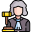

Settings

Model Settings
Gemini 1.5 Flash (Free)
GPT-3.5 Turbo
GPT-4o Mini
Get your API key
Ranking Criteria
Criteria are used to evaluate tweets. Higher weights mean more importance in the final ranking score.
Add New Criterion
Display Settings
Hide tweets with rank equal to or below:
Do not hide any tweets
1
2
3
4
5
6
7
8
9
Use colorful ranks
Save
Pause Ranking